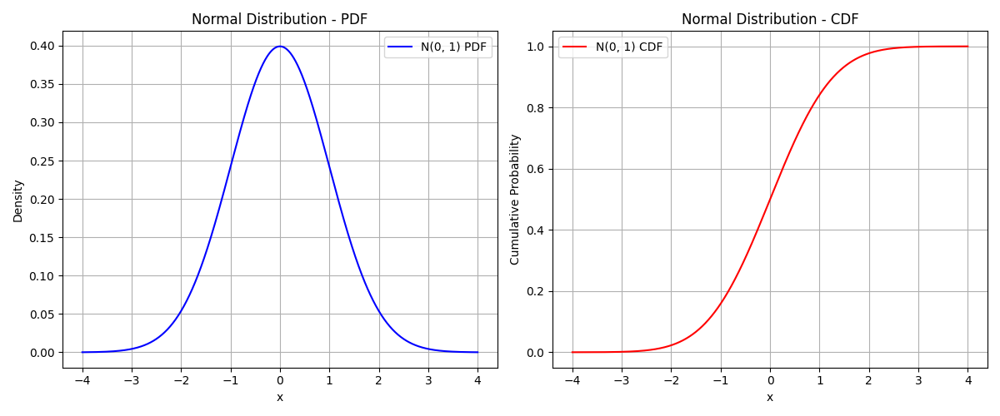

Section 1.5 Joint, Conditional and Marginal Probabilities
In this section, we address probabilities in situation when you have more than one variable. Whether they are independent or not independent makes a difference. Let’s first define a variable in the context of probability and statistics.
Subsection 1.5.1 Random Variables, Probabilities, and Expections
We will think of variables as something the is observed or measured by experiments. The outcome in any experiment is a real value of the variable. A variable whose value is uncertain or unpredictable or varies from trial to trial, even though measurement conditions haven’t changed, is called a random variable.
We tend to use capital letter for the name of the variable and small letters for its values. Thus, for a variable \(X\text{,}\) the values will be denoted by \(x_1, x_2, \cdots,\) etc. Sometimes we will use superscripts to denote values, \(x^{(1)},x^{(2)}, \cdots \text{.}\) An event will now refer to the outcome that in a particular trial, variable \(X\) has some value or a set of the possible values. Thus, \(X=\{x_1\}\) would be an event and so would be \(X=\{x_1, x_2\}\text{,}\) etc. In case of continuous values for \(X\text{,}\) and event may even be written as \(x_1 \lt X \le x_2\text{,}\) etc. We will speak about probabilities of these events in a later section.
In our practice, the values of random variables will all be real numbers. Now, if \(X\) can take any real number, whether the entire real line or a finite segment of the real line, then we will call such a variable a continuous variable. An example of continuous variable will be price of a house, \(X=\{x| 0 \le x \lt 1,000,000\}\) if the price cannot be more than \(1,000,000\text{.}\) On the other hand, if the variable takes on only discrete values, then it will be called categorical or discrete variable. An example of discrete variable will fruits of interest in some grocery store \(X=\{ \text{'apple'}, \text{'orange'}, \text{'pear'}, \text{'watermelon'}, \text{'grapes'} \}\) which has five categories.
The probability measure \(P\) of a probability space \((\Omega, F, P)\) of a categorical variable has to specify probabilities of each of the elements of finite set \(\Omega\text{.}\) Let there be \(N\) distinct values of of a categorical variable \(X\text{,}\) say, \(x_1, x_2, \cdots, x_N\text{.}\) Then, all we need to specify \(P\) are the numbers \(p_i\) for each unique/exclusive outcome.
\begin{equation}
P(X=x_i) = p_i\tag{1.5.1}
\end{equation}
Note that due to normalization, the probability of event \(\Omega\text{,}\) will be 1.
\begin{equation}
P(\Omega) = \sum_{i=1}^N P(X=x_i) = \sum_{i=1}^N p_1 = 1.\tag{1.5.2}
\end{equation}
This probability measure is called probability mass function or \(PMF\text{.}\) Given a PMF, it is easy to find the mean value of the random variable \(X\text{,}\) which will be denoted by angle brackets as per physics notation.
\begin{equation}
\text{Mean}(X) = \langle X \rangle = \sum_{i=1}^N x_i\, P(X=x_i) = \sum_{i=1}^N\, x_i\, p_i.\tag{1.5.3}
\end{equation}
The process of taking mean shows that it just sum of values of \(X\) weighted according to their probabilities. This weighting according to probabilities is called taking expectation. Thus, expectation value of any function \(f(X)\) is obtained accordingly.
\begin{equation}
\text{Expectation value of } f(X) \equiv \langle f(X) \rangle = \sum_{i=1}^N\, p_i\, f(x_i).\tag{1.5.4}
\end{equation}
The variance will be expectation value of another variable obtained by subtracting the mean \(\langle X \rangle\) from the random variable \(X\) and squaring that. This gives us a measure of the spread of values about the mean.
\begin{equation}
\text{Var}(X) = \langle \left( X - \langle X \rangle\right)^2 \rangle,\tag{1.5.5}
\end{equation}
where \(X\) is the variable but \(\langle X \rangle\) is just a number. The following calculation will relate variance to \(x_i\) and \(p_i\text{.}\)
\begin{align*}
\text{Var}(X) \amp = \sum_{i=1}^N \left( x_i - \langle X \rangle\right)^2\, P(X=x_i) \\
\amp = \sum_{i=1}^N \left( x_i^2 - 2 x_i \langle X \rangle + \langle X \rangle^2 \right)\, p_i \\
\amp = \sum_{i=1}^N x_i^2 p_i - 2 \langle X \rangle\sum_{i=1}^N x_i p_i + \langle X \rangle^2\sum_{i=1}^N p_i \\
\amp = \left( \sum_{i=1}^N p_i\,x_i^2 \right) - \langle X \rangle^2
\end{align*}
The first term is just expectation value of variable \(X^2\text{,}\) i.e., \(\langle X^2 \rangle\text{.}\) Therefore, we often see variance in the following simpler-looking formula.
\begin{equation}
\text{Var}(X) = \langle X^2 \rangle - \left( \langle X \rangle \right)^2. \tag{1.5.6}
\end{equation}
The standard deviation will, of course be, just square root of variance.
\begin{equation}
\text{Stdev}(X) = \sqrt{ \text{Var}(X) }.\tag{1.5.7}
\end{equation}
Subsection 1.5.2 Joint ad Marginal Probabilities
Suppose you have two discrete random variables, e.g, does the patient have a disease \((X)\) and is the diagnosis positive \((Y)\text{.}\) Both of these variables have just two values: \(\Omega_X = \{ x_1 = \text{Yes}, x_2 = \text{No}\}\) and \(\Omega_Y = \{ y_1 = \text{Yes}, y_2 = \text{No}\}\)
Joint probability is probability measure over the outcome space \(\Omega\) that has all the combinations of the elements of \(\Omega_X\) and \(\Omega_Y\text{.}\) That is, we will specify probability measure for each of the elements of following \(\Omega\)
\begin{equation*}
\Omega = \{ (x_1, y_1), (x_1, y_2), (x_2, y_1), (x_2, y_2) \}.
\end{equation*}
That is we need the following probabilities.
\begin{align*}
p_{11} \amp = P(X=x_1, Y=y_1) \\
p_{12} \amp = P(X=x_1, Y=y_2) \\
p_{21} \amp = P(X=x_2, Y=y_1) \\
p_{22} \amp = P(X=x_2, Y=y_2)
\end{align*}
These probabilities are joint probabilities over the joint space of \(X\) and \(Y\text{.}\) We often write joint probability by just listing the variable names or even a symbol for variable values, e.g., \(x\text{,}\) without specifying \(x_1, x_2, \text{etc}\)
\begin{equation*}
\text{Joint Probability } \equiv P(X,Y) \equiv p(x,y).
\end{equation*}
If you ignore \(Y\) and just look at the probabilities of patient having the disease and not having the disease, they are called Marginal Probabilities of \(X\text{.}\) If you had more than two variables, say \(Y, Z, A, B, \cdots\text{,}\) you would just ignore all the other variables to focus only on \(X\) to obtain its marginal probabilities.
\begin{equation}
P(x=x_1) = p_1,\ \ P(X=x_2) = p_2.\tag{1.5.8}
\end{equation}
Similar to the notation of joint probabilities, we often write the marginal probabilities by simply \(P(X)\) or \(p(x)\text{.}\)
It turns out that the marginal probabilities can be obtained from joint probabilities by just summing out the other variable’s values in the joint probability. Thus, in our example, the p_1 and p_2 of \(X\) alone will be
\begin{align*}
p_1 \amp = p_{11} + p_{12} \equiv \sum_{y=1}^2 P(X=1,Y=y) \\
p_2 \amp = p_{21} + p_{22} \equiv \sum_{y=1}^2 P(X=2,Y=y)
\end{align*}
Same will be the case if you are interested in the marginal probability of \(Y\text{.}\)
Subsubsection 1.5.2.1 Covariance and Correlation
A very common aspect of dealing with more than one random variable, say \(X\) (e.g., height of a man) and \(Y\) (e.g., the weight of the man) is to find out to what extent they tend to vary together. Covariance is a measure of their varying together either in the same direction or in the opposite direction. The normalized version of covariance so that result lies between \(-1\) and \(+1\) is called correlation.
Let \(P(X,Y)\) denote the joint probability of \(X\) and \(Y\text{.}\) Then, covariance is the following expectation value computed in this probability distribution.
\begin{equation}
\text{Cov}(X,Y) = \langle \left( X - \mu_X \right) \left( Y - \mu_Y \right) \rangle,\tag{1.5.9}
\end{equation}
where to keep the formula simpler, the mean values of \(X\) and \(Y\) are dented by \(\mu_X\) and \(\mu_Y\) respectively.
\begin{equation*}
\mu_X = \langle X \rangle,\quad \mu_Y = \langle Y \rangle
\end{equation*}
By opening the braces inside the angle brackets in Eq. (1.5.9), we can rewrite the Covariance formula in another way.
\begin{equation}
\text{Cov}(X,Y) = \langle X\,Y \rangle - \mu_X\,\mu_Y,\tag{1.5.10}
\end{equation}
where \(\langle X\,Y \rangle\) is to be computed using \(P(X,Y)\text{.}\) For \(X\) and \(Y\) discrete variable and \(P(X,Y)\) a PMF, the calculation will be
\begin{equation*}
\langle X\,Y \rangle = \sum_{x_i} \sum_{y_j} x_i y_j P(x_i, y_j).
\end{equation*}
Themean values \(\mu_X\) and \(\mu_Y\) in this case would relate to the marginals \(P(X\) and \(P(Y)\)
\begin{align*}
\mu_X\amp = \sum_{x_i} \sum_{y_j} x_i P(x_i, y_j) = \sum_{x_i} x_i\, P(x_i).\\
\mu_Y\amp = \sum_{x_i} \sum_{y_j} y_j P(x_i, y_j) = \sum_{y_j} y_j\, P(y_j).
\end{align*}
Covariance can take any real value, \(\text{Cov}(X,Y) \in (-\infty, +\infty)\text{.}\) By dividing the covariance by the standard deviations of \(X\) and \(Y\) we get correlations, whose values are in the range \(\text{Corr}(X,Y) \in [-1, +]\text{.}\)
\begin{equation}
\text{Corr}(X,Y) = \frac{ \text{Cov}(X,Y) }{ \sigma_X\, \sigma_Y }.\tag{1.5.11}
\end{equation}
The standard deviations in the joint distribution are the same as the standard deviation in the marginal as was the case for the means \(\mu_X\) and \(\mu_Y\text{.}\) For instance, in the case of discrete random variables, we will get the following for the variances, which is the square of standard deviations.
\begin{align*}
\sigma_X^2 \amp = \sum_{x_i} \sum_{y_j} \left( x_i -\mu_X \right)^2 P(x_i, y_j) = \sum_{x_i} \left( x_i -\mu_X \right)^2\, P(x_i).\\
\sigma_Y^2\amp = \sum_{x_i} \sum_{y_j} \left( y_j -\mu_Y \right)^2 P(x_i, y_j) = \sum_{y_j} \left( y_j -\mu_Y \right)^2\, P(y_j).
\end{align*}
The positive correlation (or covariance) means \(X\) vary in the same direction, i.e., increasing \(X\) and increasing \(Y\) occur together. The opposite is the case for negative correlation (or covariance).
Beware, Correlation is not the same thing as Causation! Just because two things move together doesn’t mean one causes the other. For example, suppose you find that ice cream sales and shark attacks may rise together (both happen in hot weather when people flock to the beaches), but it would be ludicurous to suggest that it means ice cream sales cause the shark attack or vice versa! Machine learning models may find patterns, but not always causal ones.
Subsection 1.5.3 Conditional Probability
Conditional probability is a little tricky and is the most used in Machine Learning. Conditional probability is denoted by \(P(X|Y)\text{.}\) But, this is too abstract a notation. I will denote it by \(P(X|Y=y)\) to be a conditional probability of \(X\) given that the random variable \(Y\) HAS A PARTICULAR VALUE \(y\text{.}\)
It is very important to notice here that \(P(X|Y=y)\) IS A PROBABILITY OF X, just under some condition. That is, in the joint space \(\Omega\) of \(X\) and \(Y\text{,}\) you will collect all the points that correspond to a particular value of \(Y\text{,}\) say \(Y=y_1\text{.}\) Now, looking at only those, what can you say about the chances for different values of \(X\text{.}\) Clearly, conditional probability is trying to capture using some knowledge about the world that comes after you have known something about the world and thus, reducing the uncertainty.
Let us look at a numerical example: Suppose 1000 patients presented symptoms of a disease A. All patients were given a test. Only 200 of the tests came out positive. When later on, we find out which of the patients had the disease and whether test came out positive or not, we construct a table given below. Use it to figure out joint probabilities, marginal probabilities, and conditional probabilities.
Before, we start writing formulas, it is best to pick a simple notation to reresent various events.
\begin{align*}
D \amp = \text{'Has disease'} \\
N \amp = \text{'Does not have disease'} \\
+ \amp = \text{'Test Positive'} \\
- \amp = \text{'Test Negative'}
\end{align*}
| \(+\) | \(-\) | ||
| \(D\) | \(150\) | \(50\) | \(n_D = 200\) |
| \(N\) | \(300\) | \(500\) | \(n_N = 800\) |
| \(n_+ = 450\) | \(n_{-}= 550\) | \(n_T = 1000\) |
For Joint probabilities, we can just divide number in each square by the total number of patients, which \(1000\) here. By dividing the totals of rows \(D\) and \(N\text{,}\) we will get the marginals \(P(D)\) and \(P(N)\text{.}\) By dividing the column totals, we get the marginals \(P(+)\) and \(P(-)\text{.}\) Table 1.5.2. Joint Probabilities
| \(+\) | \(-\) | ||
| \(D\) | \(0.150\) | \(0.050\) | \(P(D) = 0.200\) |
| \(N\) | \(0.300\) | \(0.500\) | \(P(N) = 800\) |
| \(P(+) = 450\) | \(P(-) = 550\) | \(P(\Omega) = 1.000\) |
We use conditional probability answer questions like: what is the probability of a patient having the disease if he has tested negative? When we look at Table 1.5.1, look at only those cases where people test negative - that is, look at numbers in the ’Test Negative’ column in the table. We work out other conditional probabilities similarly. Table 1.5.3. Patients that tested negative
Now, we have a total of \(50+500 = 550\) cases of which \(50\) have disease. So, the conditional probability of a patient having the disease even when he has test negative will be
| D | 50 |
| N | 500 |
\begin{equation*}
p(D\ |\ -) = \frac{50}{550} = \frac{1}{11}.
\end{equation*}
That is \(1\) in \(11\) chance he has disease. Try to answer the question: what if a patient has tested positive, what is the probability that he doesn’t have the disease, i.e., \(P(N\ |\ +)\text{?}\) Ans: \(2/3\text{.}\)
You will have eight conditional probabilities in our simple example here:
\begin{align*}
\amp p(D\ |\ - ),\qquad p(N\ |\ - ) = 1 - p(D\ |\ - )\\
\amp p(D\ |\ + ),\qquad p(N\ |\ + ) = 1 - p(D\ |\ + )\\
\amp p(+\ |\ D ),\qquad p(-\ |\ D ) = 1 - p(+\ |\ D )\\
\amp p(+\ |\ N ),\qquad p(-\ |\ N ) = 1 - p(+\ |\ N )
\end{align*}
Try computing all of them! Here, in each row, you have the complementary event, hence you have to compute only four of them. It’s important to recognize which event are complementary. For instance, \((D\ |\ -)\) and \((N\ |\ -)\) are complimentary, but \((+\ |\ D )\) and \((+\ |\ N )\) are not!
\begin{equation*}
p(+\ |\ D ) \ne 1 - p(+\ |\ N ).
\end{equation*}
That is because conditional probability \(P(X|Y)\) is a probability over the \(X\) space and not over the \(Y\) space, although the value of \(Y=y_j\) is important is choosing the slice of the joint probability. That is why, I like the notation \(P(X|Y=y_j)\) even though it is cumbersome to write.
Subsection 1.5.4 Bayes’ Rule
Before we discuss Bayes’ rule, let’s find the relation between Conditional Probability and Joint Probability. Recall that joint probability of two variables \(X\) and \(Y\) is probability over the space of \((X,Y)\)-space, but the conditional probability of \(X\) given \(Y=y_i\text{,}\) \(P(X,Y=y_i)\) is over \(X\)-space on a lice of \(P(X,Y)\) with \(Y=y_i\text{,}\) where \(y_i\) is a particular value of \(Y\text{.}\)
By product rule of probabilities, it’s clear that
\begin{equation}
P(X=x_i, Y=y_j) = P(X=x_i|Y=y_j) P(Y=y_j).\tag{1.5.12}
\end{equation}
You can write this as
\begin{equation*}
P(X=x_i|Y=y_j) = \frac{P(X=x_i, Y=y_j)}{ P(Y=y_j)}\ \ \left( P(Y=y_j) \ne 0\right)
\end{equation*}
Often, we write this relation in a more general language rather then event by event.
\begin{equation}
P(X|Y) = \frac{P(X, Y)}{ P(Y)}.\tag{1.5.13}
\end{equation}
The marginal \(P(Y=y_j)\) can, of course be obtained from the joint probability by marginalizing \(X\text{,}\) meaning summing over all \(X\text{.}\)
\begin{equation*}
P(Y=y_j) = \sum_{x_i} P(X=x_i, Y=y_j).
\end{equation*}
Notice that on the left side of Eq. (1.5.12), the order of listing of \(X\) and \(Y\) values is arbitrary, i.e.,
\begin{equation*}
P(X=x_i, Y=y_j) = P(Y=y_j, X=x_i).
\end{equation*}
Thus, it is equally possible to work with a given \(X=x_i\) and the associated conditional probability of \(Y\text{,}\) i.e., \(P(Y=y_j | X=x_i)\) and the marginal probability \(P(X=x_i)\text{.}\) This will give us
\begin{equation}
P(X=x_i, Y=y_j) = P(Y=y_j|X=x_i) P(X=x_i).\tag{1.5.14}
\end{equation}
\begin{equation}
P(X=x_i|Y=y_j) P(Y=y_j) = P(Y=y_j|X=x_i) P(X=x_i).\tag{1.5.15}
\end{equation}
Writing this in more general notation, we get the relation that is known as Bayes’ theorem or Bayes’ Rule.
\begin{equation}
P(X|Y) P(Y) = P(Y|X) P(X).\tag{1.5.16}
\end{equation}
It has become very important in the age of ML since many algorithms rely on it.
Let us see an example of the application of Bayes’ Rule. Suppose, in a population of \(1\%\) women in the age 30 to 40 develop breast cancer. It’s also known that mammogram identifies \(80\%\) of cancers accurately and misses \(20\%\) of them. This means that if a woman has breast cancer, the test will be positive \(80%\) of the time. Furthermore, the test also give negative values \(95\%\) of the time correctly, i.e., if a woman doesn’t have cancer, the test would came out negative \(95%\) of the times.
Now, a new woman in that age group comes in the lab and unfortunately, she is tested positive. So, what would you say about here chances of actually having the cancer? To answer this question, let us first introduce notations to simplify our formulas.
Let
\begin{align*}
C \amp = \text{'Has cancer'} \\
N \amp = \text{'Does not have cancer'} \\
+ \amp = \text{'Test Positive'} \\
- \amp = \text{'Test Negative'}
\end{align*}
Before, her mammogram, you would say that probability that she has cancer is just \(1\%\) since you don’t know anything about her case other than her age group and you are just using the general knowledge. This is called prior in the context of Bayes’ rule.
\begin{equation*}
P(C) = 0.01.
\end{equation*}
This clearly says that the probability of the complement of Cancer is No Cancer. So,
\begin{equation*}
P(N) = 1 - P(C) = 1 - 0.01 = 0.99.
\end{equation*}
From the description, we also know the conditional probability that if a woman has breast cancer, her probability of test positive is \(80%\text{.}\)
\begin{equation*}
P(+\ |\ C) = 0.80.
\end{equation*}
We have one more information in the data provided.
\begin{equation*}
P(+\ |\ N) = 0.95.
\end{equation*}
Now, we use Bayes’ rule:
\begin{equation*}
P(C\ |\ +) = \frac{ P(+\ |\ C) P(C) }{P(+)},
\end{equation*}
where
\begin{equation*}
P(+) = P(+\ |\ C) P(C) + P(+\ |\ N)P(N).
\end{equation*}
Let us use the numerical values now.
\begin{equation*}
P(+) = 0.80 \times 0.01 + 0.95 \times 0.99 = 0.9485.
\end{equation*}
Therefore, our desired conditional probability will be
\begin{equation*}
P(C\ |\ +) = \frac{ P(+\ |\ C) P(C) }{P(+)} = \frac{0.80 \times 0.01}{0.9485} = 0/084.
\end{equation*}
That is \(8.4\%\text{.}\)
My example above came from the following good set of example problems from University of Pennsylvania website, where you can find other examples to practice. Practice Bayes Problems.
1
Subsection 1.5.5 Independent Variables
Two random variables are said to be independent if their joint probability factors in the product of their marginal probabilities.
\begin{equation}
P(X,Y) = P(X) P(Y)\ \ \text{(Independent variables)}\tag{1.5.17}
\end{equation}
Keep in mind that behind the scene, probabilities in this equation are over events, i.e., it’s for \(X\) having some particular value and \(Y\) having its own particular value. If \(X\) and \(Y\) are independent variables, we aexpect
\begin{equation*}
P(X = x_i\, \text{and}\, Y-+y_j) = P(X=x_i) P(Y=y_j)\ \ \text{for all }x_i \text{ and } y_j.
\end{equation*}
We wouldn’t write our equations in the verbose manner, prefering to keep it simple. But, beware that probabilities are probabilities of events! Now, we write the left side of Eq. (1.5.17) using marginal and conditional probabilities.
\begin{equation*}
P(X|Y)P(Y) = P(X) P(Y)\ \ \text{(Independent variables)}
\end{equation*}
Canceling \(P(Y)\) from both sides we get
\begin{equation*}
P(X|Y) = P(X)\ \ \text{(Independent variables)}
\end{equation*}
That is knowing something about \(Y\) does not tell you anything about probability of \(X\text{.}\) That is, conditioning on \(Y\) is useless when \(X\) and \(Y\) are independent.
Subsection 1.5.6 Complications-For-Continuous-Variables
Subsubsection 1.5.6.1 Probability Density
In our discussions above, we spoke about probability space of a random variable \(X\) and spoke of probability of \(X=x_i\text{,}\) viz. \(P(X=X_i)\text{.}\) This works out nicely if \(X\) has only a finite number of discrete values, e.g., it is categorical variable. In that case we call \(P(X\) a probability mass function. However, when \(X\) is a continuous variable, say \(0\le X\le 1\text{,}\) then there are infinitely many values that \(X\) can take. In that case, probability for any one of the values will be zero. For instance, probability that \(X=0.1\) will be 0
\begin{equation*}
P(X=0.1) = 0.
\end{equation*}
So, it is not a useful concept. We replace this probability with probability of \(X\) in a range, e.g.
\begin{equation*}
P( 0.1 \le X \le 0.3 ), \text{Probability that outcome of the experiment will lie in the range of 0.1 to 0.3}.
\end{equation*}
To help with computing such probabilities, we introduce a concept of probability density \(\rho(x)\text{,}\) which will be probability per unit of \(x\text{.}\) Now, probability of outcome of an experiment falling in an infinitesimal range \(x \le X \le x+dx\) will be
\begin{equation}
P(x \le X \le x+dx) = \rho(x)\,dx.\tag{1.5.18}
\end{equation}
Then, probability in a range will just be an integral over that range
\begin{equation*}
P( 0.1 \le X \le 0.3 ) = \int_{0.1}^{0.3}\, \rho(x)\,dx.
\end{equation*}
The probability density must be such that when integrated over all possible outcomes, i.e., the set \(\Omega\text{,}\) it should give a value of 1. Thus in the case of outcomes being in the range \(0 \le X \le 1\text{,}\) we require the following normalization condition.
\begin{equation}
P( \Omega ) = \int_{\text{full range}}\, \rho(x)\,dx = 1.\tag{1.5.19}
\end{equation}
You may have heard of a Gaussian probability density of a variable \(X\text{,}\) whose range of possibilities is the entire real line, i.e., \(-\infty \lt X \lt +\infty\text{,}\) the probability density with mean \(\mu\) and standard deviation \(\sigma\) is
\begin{equation}
\rho(x) = \frac{1}{\sqrt{2\pi \sigma^2}}\, e^{ -\frac{(x-\mu)^2}{2\sigma^2} },\tag{1.5.20}
\end{equation}
where the factor in front of the exponential makes sure that ir is properly normalized to give 1.
Subsubsection 1.5.6.2 Cumulative Distribution Function (CDF)
Since continuous variables take values on real axis, their values are ordered. Therefore, we define a very important property called cumulative distribution function, often just the distribution function or CDF, to be denoted by \(F(x)\) by integrating the probability density function \(p(x)\) from \(x=-\infty\) to \(x\text{.}\)
\begin{equation}
F(x) = \int_{-\infty}^x\, \rho(x)\, dx\tag{1.5.21}
\end{equation}
Clearly, distribution function is probability of the event that the random variable \(X\) is in the range \(-\infty \lt X \le x\text{.}\)
\begin{equation}
F(x) = P( \{ -\infty \lt X \le x \} ) \equiv P( -\infty \lt X \le x ).\tag{1.5.22}
\end{equation}
It is readily seen that probability of \(X\) over any finite range \(a \le X \le b\) will simply be
\begin{equation}
P( a \le X \le b ) = F(b) - F(a).\tag{1.5.23}
\end{equation}
From complementarity of events \(\{ -\infty \lt X \le x \}\) and \(\{ X \gt x \}\text{,}\) we immediately know that
\begin{equation}
P( X > x) = 1 - P( -\infty \lt X \le x ) = 1 - F(x).\tag{1.5.24}
\end{equation}
Using the fundamental theorem of Calculus, it is immediately obvious that probability density is just the detivative of the distribution function.
\begin{equation}
\rho(x) = \frac{dF}{dx}.\tag{1.5.25}
\end{equation}
Cumulative distribution function of Gaussian distribution with mean \(\mu=0\) and unit standard deviation \(\sigma=1\) is highly used in interpretive statistics. There, it is often given a different symbol, \(\Phi(x)\text{.}\)
\begin{equation}
\Phi(x) = \int_{-\infty}^{x}\, \frac{1}{\sqrt{2}}\,\exp\left(-x^2/2\right)\, dx.\tag{1.5.26}
\end{equation}
From complementarity of events \(\{ -\infty \lt X \le x \}\) and \(\{ X \gt x \}\text{,}\) it is clear that
\begin{equation*}
P( X > x) = 1 - \Phi(x).
\end{equation*}
This is used in finding the remaining probability in the tail part of a Gaussian. For instance, in some application, we may want to know, how much probability is after \(x = 2.5\) in a Gaussian variable \(X\text{.}\)
\begin{equation*}
P( X > 2.5) = 1 - \Phi(2.5).
\end{equation*}
These are easily computed by almost every stat package. For instance in Python’s scipy library there is a powerful stats package.
import numpy as np
import matplotlib.pyplot as plt
from scipy.stats import norm
# === PARAMETERS OF THE NORMAL DISTRIBUTION ===
mu = 0 # mean
sigma = 1 # standard deviation
dist = norm(loc=mu, scale=sigma)
# === RANGE OF VALUES FOR PLOTS ===
x = np.linspace(mu - 4*sigma, mu + 4*sigma, 1000)
# === PDF AND CDF CALCULATION ===
pdf_values = dist.pdf(x)
cdf_values = dist.cdf(x)
# === PLOTTING ===
fig, ax = plt.subplots(1, 2, figsize=(12, 5))
# --- PDF plot ---
ax[0].plot(x, pdf_values, label=f'N({mu}, {sigma**2}) PDF', color='blue')
ax[0].set_title("Normal Distribution - PDF")
ax[0].set_xlabel("x")
ax[0].set_ylabel("Density")
ax[0].grid(True)
ax[0].legend()
# --- CDF plot ---
ax[1].plot(x, cdf_values, label=f'N({mu}, {sigma**2}) CDF', color='red')
ax[1].set_title("Normal Distribution - CDF")
ax[1].set_xlabel("x")
ax[1].set_ylabel("Cumulative Probability")
ax[1].grid(True)
ax[1].legend()
plt.tight_layout()
plt.show()
# === PROBABILITY FOR GIVEN x ===
x_value = 2.0 # 2 times the standard deviation which is 1 here
prob_less_than = dist.cdf(x_value)
prob_greater_than = 1 - prob_less_than
print(f"P(X \le {x_value}) = {prob_less_than:.4f}") // P(X \le 2.0) = 0.9772
print(f"P(X \gt {x_value}) = {prob_greater_than:.4f}") //P(X \gt 2.0) = 0.0228
# === x-value FOR GIVEN PROBABILITY ===
p_value = 0.99 # 99% quantile
x_at_p = dist.ppf(p_value)
print(f"x such that P(X \le, x) = {p_value} is x = {x_at_p:.4f}") // x such that P(X \lex) = 0.99 is x = 2.3263
# === PROBABILITY BETWEEN TWO VALUES ===
x_low, x_high = -1.0, 1.0
prob_between = dist.cdf(x_high) - dist.cdf(x_low)
print(f"P({x_low} \le X \le {x_high}) = {prob_between:.4f}")// P(-1.0 \le X \le 1.0) = 0.6827
